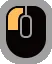
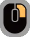

활은 속성과 차지 사격을 기반으로 한 유연하고 기동성 높은 원거리 무기로,
빠른 연사와 회피 사격을 통해 끊임없이 몬스터를 압박할 수 있는 특징을 지닙니다.
기본적으로 차지 단계를 유지하면서 공격의 위력을 극대화할 수 있으며,
속성 병이나 상태이상 병을 자유롭게 장착하여 다양한 상황에 대응하는 전략적 운용이 가능합니다.
특히 용화살과 같은 강력한 일격 기술과 회피 후 반격으로 이어지는 공세는 숙련자에게 큰 잠재력을 제공합니다.
거리 조절과 스태미나 관리, 적절한 위치 선점이 핵심인 만큼, 활은 원거리 무기 중에서도 가장 역동적인 전투 스타일을 가진 무기입니다.

활
특성 요약
| 무기 | 상쇄 | 가드 | 전용자원 | 난이도 |
|---|---|---|---|---|
| 활 | ❌ | ❌ | ✅ | 4 |
활 기본 조작
| 동작 | PC | Xbox/콘솔 | 설명 |
|---|---|---|---|
| 모으기 |  길게 | RT 길게 | 활을 당겨 화살을 쏨. 길게 누를수록 차지 단계 상승, 위력 증가. |
| 퀵샷 | B | 빠르게 화살을 확산 사격. 스태미나 소비 없음. | |
| 강사 | 콤보 중 |
콤보 중 B | 화살을 강하게 확산시켜 쏘는 기술. 모으기 단계를 이어받을 수 있다. |
| 강연사 | 콤보 중 |
콤보 중 B | 강사 공격 후 B를 누르면 강연사로 파생된다. |
| 차지 스텝 | +
|
LT + A or RT + 스틱 | 특수 스텝(회피), 회피 성공 시 차지 단계 상승 및 스태미나/특수 화살 게이지 회복. |
| (차지 스텝 파생)비연 쏘기 | 차지 스텝 중 |
차지 스텝 중 Y | 차지 스텝 중 사용 시 스틱 방향으로 쏠 수 있음. |
| 용화살 | Y + B | 몬스터를 꿰뚫는 강력한 화살을 쏜다. 잔류 촉발 화살과 유도 화살을 함께 폭발시킬 수 있다. | |
| 용화살 찰나 | 콤보 중 |
콤보 중 Y + B | 빠르게 몬스터를 꿰뚫는 강력한 화살을 쏜다. 잔류 촉발 화살과 유도 화살을 함께 폭발시킬 수 있다. |
| 집중 쏘기 [천우] | +
|
LT + RB | 상처 및 유도 화살 조준, 3단계까지 화살 수 증가. 상처에 맞으면 추가 쏘기로 파생된다. |
RT
+
B
연사
활의 기본 평타
연계의 시작 및 징검다리 역할을 합니다.
RT
+
B
강사
B를 한번 더 누르면 강연사로 연계됩니다.

RT
+
X
유도 화살
게이지를 소모하여 폭팔하기 전까지 화살들을 유도하는 화살을 발사합니다
RT
+
RT
+
B
+
B
연강강 운영
활의 주력 운영 방식입니다.
간파 회피로 스테미나를 수급하면서 상대의 약점에 안정적인 딜링이 가능한 운영법입니다.
병의 종류에 따라 운영이 조금씩 갈린다는 특징도 있습니다.
강격벙
유도 화살을 적절히 섞어 사용하며 중거리에서 딜을 하는 방식입니다.
관통병
유도화살을 잘 사용하지 않고, 몬스터에 근접해 연사, 퀵샷, 강사 위주로 딜하는 방식입니다.
접격병
유도화살을 사용하지 않고 초근접에서 강사를 약점부위에 욱여넣는 느낌의 방식입니다.

LT
+
B
+
A
용화살
활의 또 다른 주력 운영방식
접격병의 위력 보정에 주목해 용화살 위주로 사냥하는 방식.